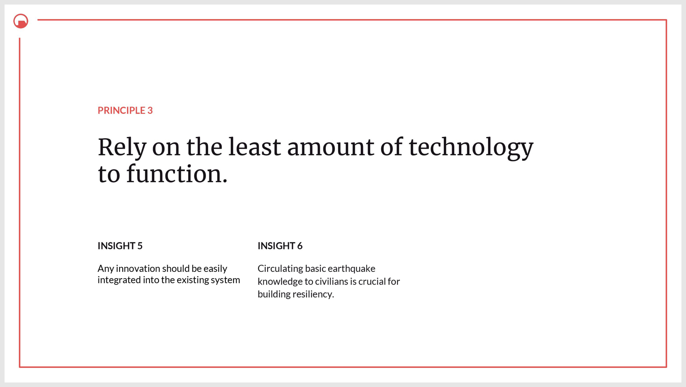
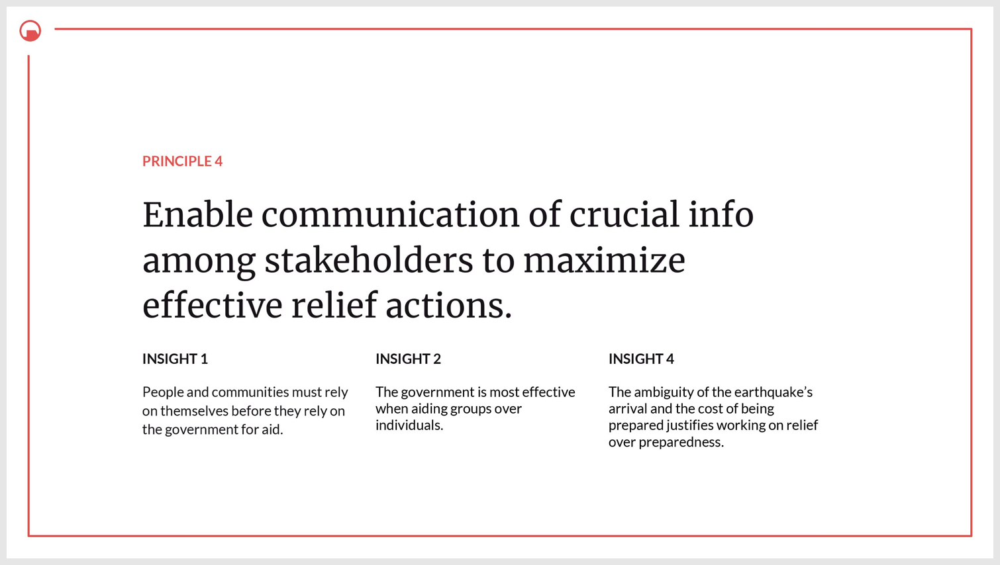
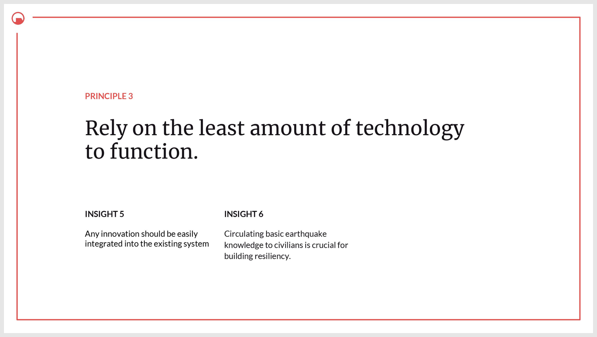
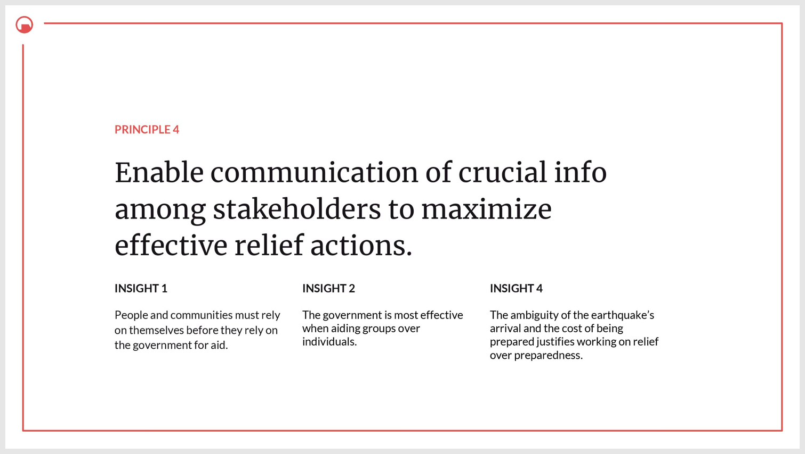

user experience
For a class based on Design Research we began the project by exploring potential research topics and questions. After much consideration we decided to focus on the Cascadia Subduction Zone with the intent of exploring this research question:
"How might we preserve human life in Seattle in the aftermath of a megathrust earthquake?"
We didn't want to create a problem but actually find an area in this space that truly needed improvement. We then set up a research plan for what exactly we were looking for and how we would find it.
Research Handbook (Research Plan + Study Guide)

We talked to many industry professionals. We decided to interview a broad range of people so we could get a larger view into where problems needed to be solved and to get a better understanding of how and why the current systems are the way they are.
Apart from structured interviews with certain specialists, we also conducted secondary research and complied the most important points.
Secondary Research


From all our research we synthesized the data. First we transcibed the data into themes and then extracted particular insights from the themes. These insights were generated from multiple direct quotes from people working within the problem space.
 



From the insights we had to further define what was necessary from our findings. This process led to the design principles which fundamentally revolved around helping civilians as opposed goverment policy makers or first responders. Our design principles directed our further steps to bring about a solution to the problems we understood.
Our concepts revolved around our design principles and our given restriction to work in the field of biometrics.
On further developing one of the concepts, we tested out a prototype. It was a behavioral/wizard-of-oz prototype, and our focus was on people interacting with the prototype and their organic reactions to it.
SafeLink — Black Mesa from Krishang Swami on Vimeo.